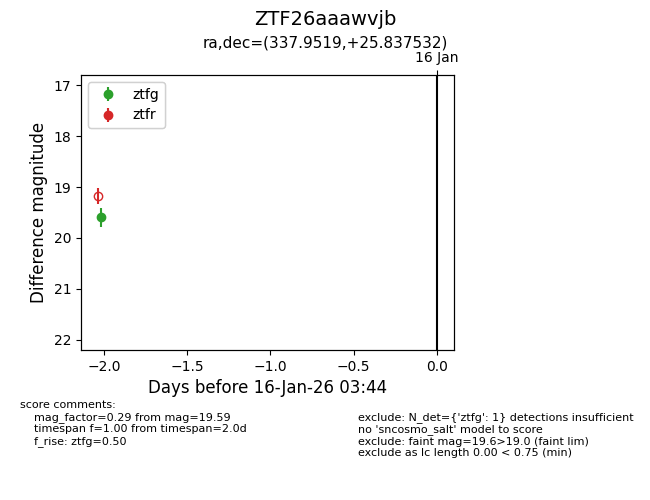
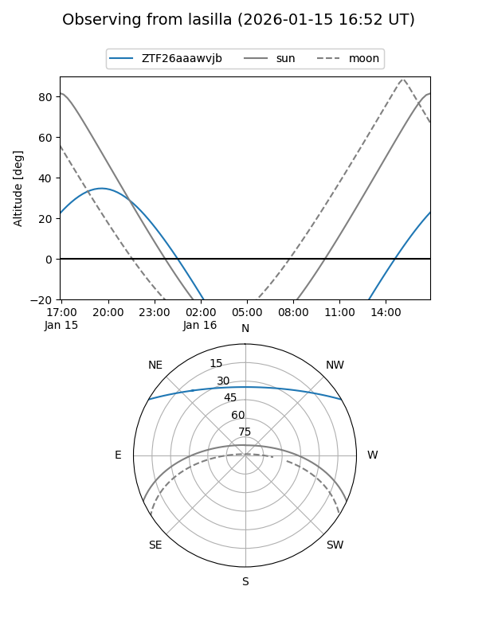
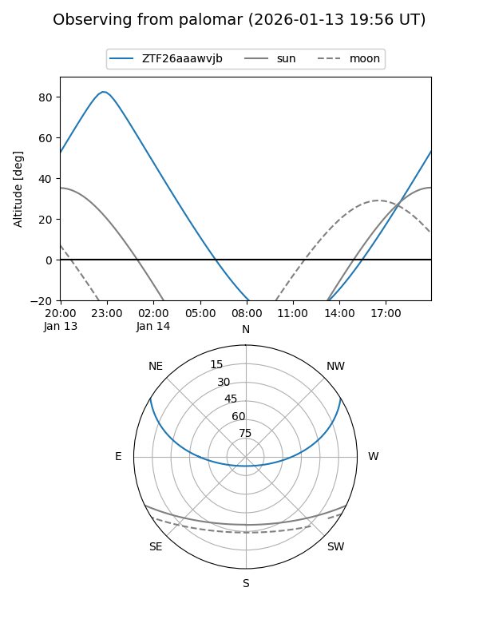

ZTF26aaawvjb
Target ZTF26aaawvjb at 2026-01-14 03:35
Aliases and brokers:
FINK: link
Lasair: link
ALeRCE: link
alt names
ZTF26aaawvjb (ztf,fink_ztf)
Coordinates:
equatorial (ra, dec) = 337.9519,+25.83753
equatorial (HMS+DMS) = 22:31:48.46,+25:50:15.11
galactic (l, b) = (87.5204,-27.26906)
Flags:
Photometry:
last ztfg=19.59
1 ztfg detections
Lightcurve

Visibility


Additional plots